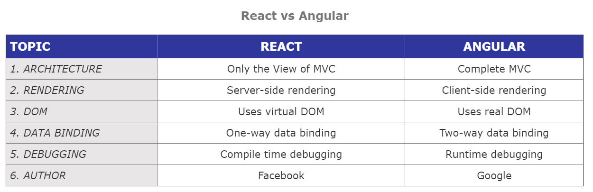
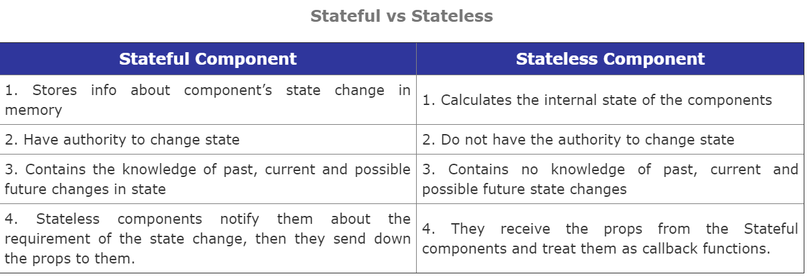
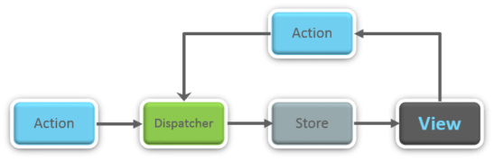
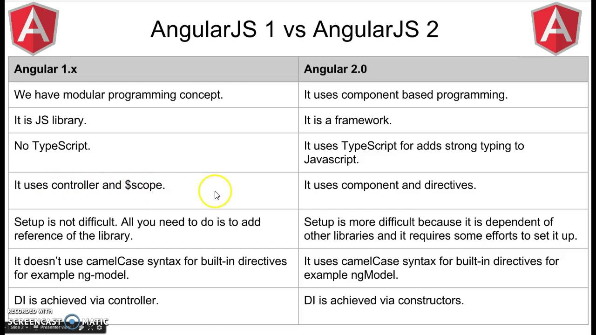

Angular Interview Qsns
Features and Advantages
Jump to: INDEX REACT Major features of React are listed below:
It uses the virtual DOM instead of the real DOM.
It uses server-side rendering.
It follows uni-directional data flow or data binding.
Some of the major advantages of React are:
It increases the application’s performance
It can be conveniently used on the client as well as server side
Because of JSX, code’s readability increases
React is easy to integrate with other frameworks like Meteor, Angular, etc
Using React, writing UI test cases become extremely easy
Limitations
Jump to: INDEX REACTLimitations of React are listed below:
- React is just a library, not a full-blown framework
- Its library is very large and takes time to understand
- It can be little difficult for the novice programmers to understand
- Coding gets complex as it uses inline templating and JSX
JSX
Jump to: INDEX REACTJSX is a shorthand for JavaScript XML. This is a type of file used by React which utilizes the expressiveness of JavaScript along with HTML like template syntax. This makes the HTML file really easy to understand. This file makes applications robust and boosts its performance.
VDOM
Jump to: INDEX REACTA virtual DOM is a lightweight JavaScript object which originally is just the copy of the real DOM. It is a node tree that lists the elements, their attributes and content as Objects and their properties. React’s render function creates a node tree out of the React components. It then updates this tree in response to the mutations in the data model which is caused by various actions done by the user or by the system. This Virtual DOM works in three simple steps.
- Whenever any underlying data changes, the entire UI is re-rendered in Virtual DOM representation.
- Then the difference between the previous DOM representation and the new one is calculated.
- Once the calculations are done, the real DOM will be updated with only the things that have actually changed.
Real DOM vs VDOM
Jump to: INDEX REACTReact VS Angular
Jump to: INDEX REACT Props
Jump to: INDEX REACTProps is the shorthand for Properties in React. They are read-only components which must be kept pure i.e. immutable. They are always passed down from the parent to the child components throughout the application. A child component can never send a prop back to the parent component. This help in maintaining the unidirectional data flow and are generally used to render the dynamically generated data.
State
Jump to: INDEX REACTStates are the heart of React components. States are the source of data and must be kept as simple as possible. Basically, states are the objects which determine components rendering and behavior. They are mutable unlike the props and create dynamic and interactive components. They are accessed via this.state().
Stateful vs Stateless
Jump to: INDEX REACT 
Phases of Compnent's lifecycle
Jump to: INDEX REACTThere are three different phases of React component’s lifecycle:
- Initial Rendering Phase: This is the phase when the component is about to start its life journey and make its way to the DOM.
- Updating Phase: Once the component gets added to the DOM, it can potentially update and re-render only when a prop or state change occurs. That happens only in this phase.
- Unmounting Phase: This is the final phase of a component’s life cycle in which the component is destroyed and removed from the DOM.
Lifecycle Methods
Jump to: INDEX REACTSome of the most important lifecycle methods are:
- componentWillMount() – Executed just before rendering takes place both on the client as well as server-side.
- componentDidMount() – Executed on the client side only after the first render.
- componentWillReceiveProps() – Invoked as soon as the props are received from the parent class and before another render is called.
- shouldComponentUpdate() – Returns true or false value based on certain conditions. If you want your component to update, return true else return false. By default, it returns false.
- componentWillUpdate() – Called just before rendering takes place in the DOM.
- componentDidUpdate() – Called immediately after rendering takes place.
- componentWillUnmount() – Called after the component is unmounted from the DOM. It is used to clear up the memory spaces.
Synthetic Events
Jump to: INDEX REACTSynthetic events are the objects which act as a cross-browser wrapper around the browser’s native event. They combine the behavior of different browsers into one API. This is done to make sure that the events show consistent properties across different browsers.
Higher Order Components(HOC)
Jump to: INDEX REACTHigher Order Component is an advanced way of reusing the component logic.
Basically, it’s a pattern that is derived from React’s compositional nature.
HOC are custom components which wrap another component within it.
They can accept any dynamically provided child component but they won’t modify or copy any behavior from their input components.
You can say that HOC are ‘pure’ components.
Uses:
- Code reuse, logic and bootstrap abstraction
- Render High jacking
- State abstraction and manipulation
- Props manipulation
Pure Components
Jump to: INDEX REACTPure components are the simplest and fastest components which can be written. They can replace any component which only has a render(). These components enhance the simplicity of the code and performance of the application.
REDUX
FLUX
Jump to: INDEX REACTFlux is an architectural pattern which enforces the uni-directional data flow. It controls derived data and enables communication between multiple components using a central Store which has authority for all data. Any update in data throughout the application must occur here only. Flux provides stability to the application and reduces run-time errors. 
REDUX
Jump to: INDEX REACTRedux is one of the hottest libraries for front-end development in today’s marketplace. It is a predictable state container for JavaScript applications and is used for the entire applications state management. Applications developed with Redux are easy to test and can run in different environments showing consistent behavior.
Principles of REDUX
Jump to: INDEX REACT- Single source of truth: The state of the entire application is stored in an object/ state tree within a single store. The single state tree makes it easier to keep track of changes over time and debug or inspect the application.
- State is read-only: The only way to change the state is to trigger an action. An action is a plain JS object describing the change. Just like state is the minimal representation of data, the action is the minimal representation of the change to that data.
- Changes are made with pure functions: In order to specify how the state tree is transformed by actions, you need pure functions. Pure functions are those whose return value depends solely on the values of their arguments.
Single Source of Truth
Jump to: INDEX REACTRedux uses ‘Store’ for storing the application’s entire state at one place. So all the component’s state are stored in the Store and they receive updates from the Store itself. The single state tree makes it easier to keep track of changes over time and debug or inspect the application.
Redux Components
Jump to: INDEX REACTRedux is composed of the following components:
- Action – It’s an object that describes what happened.
- Reducer – It is a place to determine how the state will change.
- Store – State/ Object tree of the entire application is saved in the Store.
- View – Simply displays the data provided by the Store.
Role of Reducer
Jump to: INDEX REACTReducers are pure functions which specify how the application’s state changes in response to an ACTION. Reducers work by taking in the previous state and action, and then it returns a new state. It determines what sort of update needs to be done based on the type of the action, and then returns new values. It returns the previous state as it is, if no work needs to be done.
Use of Store in Redux
Jump to: INDEX REACTA store is a JavaScript object which can hold the application’s state and provide a few helper methods to access the state, dispatch actions and register listeners. The entire state/ object tree of an application is saved in a single store. As a result of this, Redux is very simple and predictable. We can pass middleware to the store to handle the processing of data as well as to keep a log of various actions that change the state of stores. All the actions return a new state via reducers.
Redux vs Flux
Jump to: INDEX REACT

Redux Advantages
Jump to: INDEX REACTAdvantages of Redux are listed below:
- Predictability of outcome – Since there is always one source of truth, i.e. the store, there is no confusion about how to sync the current state with actions and other parts of the application.
- Maintainability – The code becomes easier to maintain with a predictable outcome and strict structure.
- Server-side rendering – You just need to pass the store created on the server, to the client side. This is very useful for initial render and provides a better user experience as it optimizes the application performance.
- Developer tools – From actions to state changes, developers can track everything going on in the application in real time.
- Community and ecosystem – Redux has a huge community behind it which makes it even more captivating to use. A large community of talented individuals contribute to the betterment of the library and develop various applications with it.
- Ease of testing – Redux’s code is mostly functions which are small, pure and isolated. This makes the code testable and independent.
- Organization – Redux is precise about how code should be organized, this makes the code more consistent and easier when a team works with it.
Sample
Jump to: INDEX REACT
Angular Features
Jump to: INDEX ANGULAR
- Scope
- Model
- View
- Services
- Data Binding
- Directives
- Filters
- Testable
Data Binding
Jump to: INDEX ANGULAR
According to AngularJS.org, “Data-binding in Angular apps is the automatic synchronization of data between the model and view components. The way that Angular implements data-binding lets you treat the model as the single-source-of-truth in your application. The view is a projection of the model at all times. When the model changes, the view reflects the change and vice versa.”
There are two ways of data binding:
1.Data mining in classical template systems
2.Data binding in angular templates
Directives
Jump to: INDEX ANGULAR
A core feature of AngularJS, directives are attributes that allow you to invent new HTML syntax, specific to your application. They are essentially functions that execute when the Angular compiler finds them in the DOM. Some of the most commonly used directives are ng-app,ng-controller and ng-repeat.
The different types of directives are:
- Element directives
- Attribute directives
- CSS class directives
- Comment directives
Controllers
Jump to: INDEX ANGULARControllers are Javascript functions which provide data and logic to HTML UI. As the name suggests, they control how data flows from the server to HTML UI.
Scope
Jump to: INDEX ANGULAR
Scope is an object that refers to the application model.
It is an execution context for expressions.
Scopes are arranged in hierarchical structure which mimic the DOM structure of the application.
Scopes can watch expressions and propagate events.
The characteristics of Scope are:
- Scopes provide APIs ($watch) to observe model mutations.
- Scopes provide APIs ($apply) to propagate any model changes through the system into the view from outside of the “Angular realm” (controllers, services, Angular event handlers).
Advantages
Jump to: INDEX ANGULAR
- Supports two way data-binding
- Supports MVC pattern
- Support static template and angular template
- Can add custom directive
- Supports REST full services
- Supports form validations
- Support both client and server communication
- Support dependency injection
- Applying Animations
- Event Handlers
Injector
Jump to: INDEX ANGULARAn injector is a service locator, used to retrieve object instance as defined by provider, instantiate types, invoke methods, and load modules.
Rootscope
Jump to: INDEX ANGULAREvery application has a single root scope. All other scopes are descendant scopes of the root scope. Scopes provide separation between the model and the view, via a mechanism for watching the model for changes. They also provide event emission/broadcast and subscription facility.
Routing
Jump to: INDEX ANGULARIt is a five-step process: Step 1: – Add the “Angular-route.js” file to your view. Step 2: – Inject “ngroute” functionality while creating Angular app object. Step 3: – Configure the route provider. Step 4: – Define hyperlinks. Step 5: – Define sections where to load the view.
Angular JS vs Angular 2
Jump to: INDEX ANGULAR
JavaScript Qsns
Data Types
Jump to: INDEX JavaScript
Primitive: String, number, boolean, null, undefined.
Complex: Object
Event Bubbling
Jump to: INDEX JavaScriptWhen an event happens on an element, it first runs the handlers on it, then on its parent, then all the way up on other ancestors. ***Almost all events bubble a focus event does not bubble. event.stopPropagation() is used to stop event bubbling.
Inheritence/Prototype chaining
Jump to: INDEX JavaScriptThere are two types of Inherientence in OOPS Classic and Prototypical Inheritance. Javascript follows Prototypical Inheritance.
Use Strict
Jump to: INDEX JavaScriptThe purpose of "use strict" is to indicate that the code should be executed in "strict mode”. With strict mode, you cannot use undeclared variables. It helps you to write cleaner code, like preventing you from using undeclared variables. Ex:
- In normal JavaScript, mistyping a variable name creates a new global variable. In strict mode, this will throw an error, making it impossible to accidentally create a global variable.
- In normal JavaScript, a developer will not receive any error feedback assigning values to non-writable properties.
- In strict mode, any assignment to a non-writable property, a getter-only property, a non-existing property, a non-existing variable, or a non-existing object, will throw an error.
IIFE Construct
Jump to: INDEX JavaScript
An IIFE (Immediately Invoked Function Expression) is a JavaScript function that runs as soon as it is defined.
(function () {
statements
}) ();
It is a design pattern which is also known as a Self-Executing Anonymous Function and contains two major parts.
The first is the anonymous function with lexical scope enclosed within the Grouping Operator (). This prevents accessing variables within the IIFE idiom as well as polluting the global scope.
The second part creates the immediately executing function expression () through which the JavaScript engine will directly interpret the function.
Constructor
Jump to: INDEX JavaScript
The constructor method is a special method for creating and initializing an object created within a class.
A constructor can use the super keyword to call the constructor of a parent class.
Typecasting
Jump to: INDEX JavaScript
Converting a data type into another is known as type casting.
To convert a value to string data type: String(value);
Converting to Number :Number(value);
Callback function
Jump to: INDEX JavaScript
Simply put: A callback is a function that is to be executed after another function has finished executing — hence the name ‘call back’.
More complexly put: In JavaScript, functions are objects. Because of this, functions can take functions as arguments, and can be returned by other functions.
Functions that do this are called higher-order functions. Any function that is passed as an argument is called a callback function.
Callback Hell
Jump to: INDEX JavaScriptCallback hell is any code where the use of function callbacks in async code becomes obscure or difficult to follow. Generally, when there is more than one level of indirection, code using callbacks can become harder to follow, harder to refactor, and harder to test. A code smell is multiple levels of indentation due to passing multiple layers of function literals. Here's how to avoid callback hell:
- Don't nest functions.Give them names and place them at the top level of your program
- Use function hoisting to your advantage to move functions 'below the fold'
Also you can use Promises, Generators Async functions
- Promises are a way to write async code that still appears as though it is executing in a top-down way, and handles more types of errors due to encouraged use of try/catch style error handling.
- Generators let you 'pause' individual functions without pausing the state of the whole program, which at the cost of slightly more complex to understand code lets your async code appear to execute in a top-down fashion. Check out watt for an example of this approach.
- Async functions are a proposed ES7 feature that will further wrap generators and promises in a higher level syntax. Check them out if that sounds interesting to you.
Promises
Jump to: INDEX JavaScript
- We use promises for handling asynchronous interactions in a sequential manner. They are especially useful when we need to do an async operation and THEN do another async operation based on the results of the first one. For example, if you want to request the list of all flights and then for each flight you want to request some details about it. The promise represents the future value. It has an internal state (pending, fulfilled and rejected) and works like a state machine.
- A promise object has then method, where you can specify what to do when the promise is fulfilled or rejected.
- You can chain then() blocks, thus avoiding the callback hell. You can handle errors in the catch() block.
- After a promise is set to fulfilled or rejected state, it becomes immutable.
Currying
Jump to: INDEX JavaScript
Currying is a process in functional programming in which we can transform a function with multiple arguments into a sequence of nesting functions.
It returns a new function that expects the next argument inline.
Ex: multiply(1,2,3) to multiply(1)(2)(3)
Exception handling
Jump to: INDEX JavaScript- The try statement lets you test a block of code for errors.
- The catch statement lets you handle the error.
- The throw statement lets you create custom errors.
- The finally statement lets you execute code, after try and catch, regardless of the result.
** if an exception is thrown, the statements in the finally clause execute even if no catch clause handles the exception.
Event Binding
Jump to: INDEX JavaScriptTest.......
How to create object ?
Jump to: INDEX JavaScriptTest.......
use of This
Jump to: INDEX JavaScript
- By default, “this” refers to global object which is global in case of NodeJS and window object in case of browser
- When a method is called as a property of object, then “this” refers to the parent object
- When a function is called with “new” operator then “this” refers to the newly created instance.
- When a function is called using call and apply method then “this” refers to the value passed as first argument of call or apply method.
ES6 Features
Jump to: INDEX JavaScript
- let and const
- Arrow functions
- Classes
- Template strings (concatenation of strings and varibales using backticks)
- Rest and Spread operators
- Promises
Array Methods
Jump to: INDEX JavaScript
- toString(): converts array to string
- join():same as string but adds a seperator
- pop(): removes the last element from an array
- push():adds a new element to an array (at the end)
- shift():equivalent to popping, working on the first element instead of the last.
- unshift():adds a new element to an array (at the beginning), and "unshifts" older elements:
- length: provides an easy way to append a new element to an array
- splice():changes the contents of an array by removing or replacing existing elements and/or adding new elements in place
- concat():creates a new array by merging (concatenating) existing arrays
- slice(): slices out a piece of an array into a new array
- Foreach: Foreach takes a callback function and run that callback function on each element of array one by one.
- Filter: same like forEach but filter executes the callback and check its return value. If the value is true element remains in the resulting array but if the return value is false the element will be removed for the resulting array.
- Map:Same like forEach but it generates a new array
- Reduce:used to reduce the array to one single value.
String methods
Jump to: INDEX JavaScript
- length:returns the length of a string
- indexOf() :returns the index of (the position of) the first occurrence of a specified text in a string
- slice():extracts a part of a string and returns the extracted part in a new string.
- replace():replaces a specified value with another value in a string
- toUpperCase(): A string is converted to upper case
- toLowerCase():A string is converted to lower case
- concat(): joins two or more strings
- trim():removes whitespace from both sides of a string
- charAt(): returns the character at a specified index (position) in a string
- split():A string can be converted to an array
call vs apply
Jump to: INDEX JavaScript
Both call and apply perform very similar functions: they execute a function in the context, or scope, of the first argument that you pass to them.
Call runs the function in the context of the first argument, and subsequent arguments are passed in to the function to work with.
Apply expects the second argument to be an array that it unpacks as arguments for the called function.
Break vs Continue
Jump to: INDEX JavaScriptTest.......
Null vs Undefined
Jump to: INDEX JavaScriptTest.......
let/const/var
Jump to: INDEX JavaScript
Var variables can be re-declared and updated, scope- global when declared outside function
let can be updated but not re-declared, let is block scoped
const cannot be updated or re-declared, const declarations are block scoped
Spread vs rest
Jump to: INDEX JavaScriptTest.......
Map/forEach/Reduce/Filter
Jump to: INDEX JavaScriptTest.......
Test QSN
Jump to: INDEX JavaScriptTest.......
Test QSN
Jump to: INDEX JavaScriptTest.......